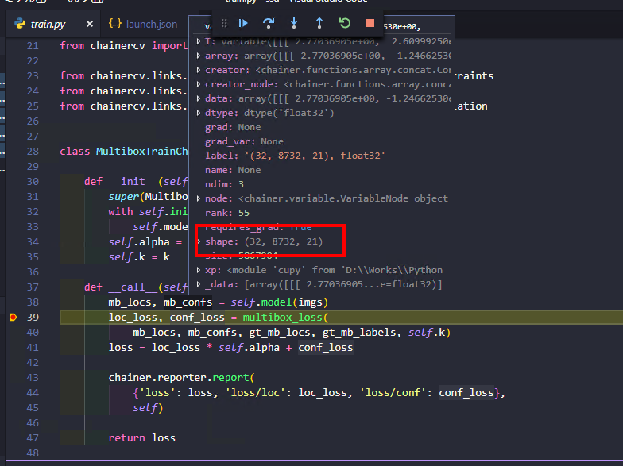
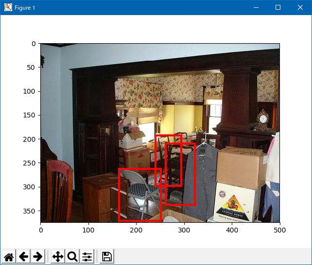
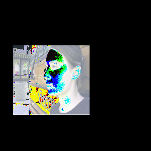

Introduction
備忘録。基本中の基本だけど数学苦手で理論も苦手な自分用のメモ。 基本、train.pyについての解説。
What is problem?
配列の次元の意味
ChainerCVにおけるサンプルのSSDの実装は、MultiboxTrainChainクラスが中心。 で、ネットワークに画像(正確にはバッチ数分)を入力した際の出力について。 下記画像における、mb_locs、mb_confs。

{kind=link}
- mb_locs
- multibox locations、つまり位置の損失
- 次元は、バッチ数、8732、4(x,y,w,h)
- mb_confs
- multibox confidences、つまり確信度の損失
- 次元は、バッチ数、8732、カテゴリ数+1
となる。 カテゴリ数にプラス1しているのは、どのカテゴリにも合致しない、というカテゴリを用意するため。 SSDのサンプルはVOC2007のため、カテゴリ数は20なので、21になる。 8732はデフォルトボックス、つまり画像全体を分割する矩形の個数。 なので、mb_confsの場合、カテゴリ毎に8732の矩形それぞれに損失が格納されていることを意味する。 (正確には、画像毎に対して、カテゴリ8732個が割り当てられ、その1つ1つにカテゴリ21個の損失が格納されている。) 損失はラベルに合致した場合は正、合致しない場合は負になる。
可視化
学習や推論に使用される変数を可視化するといろいろわかる。
データセット
学習を始める前に、利用される教師データがどのようなものかを可視化する。 [code lang=”pyton”] from chainercv.visualizations import vis_bbox
vocTrain = VOCBboxDataset(year=’2007’, split=’trainval’) img, bbox, label = vocTrain[0] vis_bbox(img, bbox, label) [/code]

{kind=link}
imgs
MultiboxTrainChainの**call**に渡ってくる引数を確認することでいろいろな情報が確認できる。 imgsは
- cupy.core.core.ndarrayなので、Numpy.ndarrayに変換
- チャネル数、高さ、幅の順の次元をNumpy.transposeで、高さ、幅、チャネル数に変換
- uint8に変換
- RGB形式として画像に変換し、ファイル出力
という手順で可視化ができる。 [code lang=”python”] from PIL import Image Image.fromarray(np.uint8(np.transpose(chainer.cuda.to_cpu(imgs[0]), (1, 2, 0))),”RGB”).save(“test.png”) [/code]

{kind=link}
この段階で来る画像は、学習用に水増しされている画像に変換されているので注意。